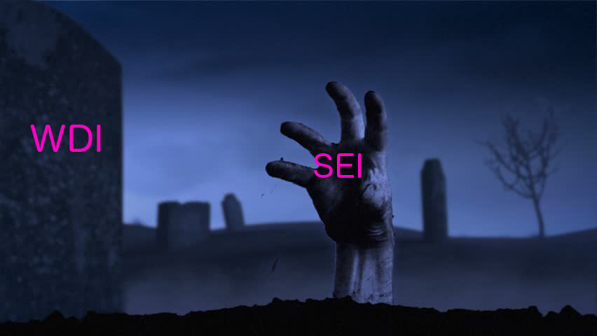

H E L L O
👋
IT BEGINS
SEI GROUND ZERO
WHO ARE WE?
Luke Hammer
Spooky Ghost TA
Bunch of Randos
WHO IS ME?
- Coding since the early '90s: 25 years of glory
- Paid to code for almost 20 years
- Very old, dead soon... treasure every precious moment
- My first computer program
- Hackin' & Tinkerin' on the Amiga 500
- Higher Education: comp sci fancy man
- True loves:
- C, Linux, open source
- Passion projects: music & graphics
- Electronics projects: Arduino, Raspberry Pi
- Natural Interfaces: Kinect, Leap, VR
- Recreation: Making a Racket, Great Outdoors
WORKIN' FOR THE MAN
Things I Have Done For Money
- Sydney, Melbourne, Glasgow & Highlands, Berlin
- Tiny brochure/portfolio sites
- Giant sites that will never ever be finished
- Junior roles to lead developer roles
- On-site server setup, maintenance, support
- C on Embedded Linux
- Teaching: 9 WDIs
Why I Teach:
FUN
CODING LITERACY IS THE NEW LITERACY
How I Teach
- Golden Retriever-like enthusiasm mixed with weary cynicism
- Admiration/sympathy for beginners
- Respectful interruptions welcome, i.e. ASK QUESTIONS
- Try to keep it interesting / don't take it too seriously
- The problem: Information Overload
- The solutions:
- Don't panic!
- Stop me before you get too lost - the sooner the better
- Hold on to whatever you can, filter the rest
- Practice: Repetition, Repetition, Repetition
RIP WDI
WTF IS SEI?

SEI = WDI + COMP SCI
AWKWARD CLASS PARTICIPATION BIT
Knowing Me, Knowing You
Web Development is two things (mostly)
- Reading/editing text files
- Solving problems
- 40% - writing code
- 60% - figuring out why it doesn't work
From a friend learning to code: "All this time I thought you were doing magic, and you were just sitting around editing text files!"
— Noah Veltman (@veltman) November 9, 2013
What have you got yourselves into?
To be a good developer you ought to:
- Type well: typing.io
- Be comfortable editing text
- Enjoy solving problems
- Have a high capacity for frustration
- Be details-oriented/pedantic about your code
- Not mind reading documentation/researching
- Draw a lot of diagrams
- Get used to constantly learning
"Always code as if the person who ends up maintaining your work will be a violent psychopath who knows where you live."
"Programming isn't about what you know; it's about what you can figure out." - Chris Pine
What This Course Is Really About
- Web browsers
- Text editors and text editing
- Writing: clear communication
- Collaborating
- Learning how to learn / pattern recognition
- Design — system, not visual
- Problem solving: decomposition / "divide and conquer"
- Stickers
- Animated GIFs
- Traditions:
- Dreaming in Code
- Hating MTA
- Margaritas
- The Spit To Manly
- Burning Airlines
- People hurting themselves on skateboards as a metaphor
Structure of the Course
An Odyssey in 12 Parts
A Typical Day
- 9:00 - 9:45: Warmup
- 9:45 - 10:15: Warmup solution
- 10:15 - 10:30: Homework demos
- 10:30 - 1:00: Main Session/Codealong
- 11:00 - Break / morning tea / "little lunch"
- 1:00 - 2:00: Lunch (Outcomes/Guest Speaker?)
- 2:00 - 5:00: More Session/Review/Lab Time
- 5:00+: Homework
- 5:45: So long suckers!
A Matter of Balance
Not like reading a book on how to play the piano
Active Learning / Learning By Doing
Project Week:
A Festival of Fail

THE GOOD NEWS:
THE SYSTEM WORKS
THE CATCH:
YOU HAVE TO WORK
a.k.a The First Law of Thermodynamics:
"You Get Out What You Put In"
Two Surprises About This Course
- Coding is fun, creative, a form of self-expression,
a new way of thinking - The Shadow SEI: This course is not just about web programming
Maximising Value
Your biggest investment here is your time.
Immerse yourself every day in:
- Writing code
- Conversation / Jargon
- Asking questions
- Culture
- Good headphones
- Communication:
- Slack
- Blogging
- Vlogging (e.g. Diaro)
- TiddlyWiki.com
- SEI.txt
Age Shall Not Weary Them
The WDI/SEI Alumni family
Wisdom of your elders
SEI is not like university.
SEI is not graded.
This is not a course in rote learning, or sticking to the textbook.
Learning to code is learning to use the internet as an extension of your brain.
Read around.
Don't compare yourself to others.
It's okay not to "get it" right away.
You got this.
You are SEI 32

Class Culture
- Our time together here lets us experiment with defining our own culture
- A bit like making our own yoghurt
- But more like shared values
- a.k.a. "crowd-sourced guidelines"
- So...
- What would we like our culture to embrace and
do well?
Code of Conduct
Be kind to each other
or
I will kill you
Geek/Hacker Culture
Share and enjoy
- Books
- Movies and TV series
- Memes

The Jargon File
The Tao of Programming
THE MEANING(S) OF "HACKER"
Larval Stage: n.
Describes a period of monomaniacal concentration on coding apparently passed through by all fledgling hackers. Common symptoms include the perpetration of more than one 36-hour hacking run in a given week; neglect of all other activities including usual basics like food, sleep, and personal hygiene; and a chronic case of advanced bleary-eye. Can last from 6 months to 2 years, the apparent median being around 18 months. A few so afflicted never resume a more ‘normal’ life, but the ordeal seems to be necessary to produce really wizardly (as opposed to merely competent) programmers.
Without the wind, the grass does not move. Without software, hardware is useless.
— The Tao of Programming, Book 8
Sign Up
Sign Up, Bookmark, Attend
SydJS
- Sydney's amazing Javascript User Group
- Monthly Meetup
- Mailing List
Sign Up, Bookmark, Attend
RORO Sydney
- Sydney's amazing Ruby Users Group
- Monthly Meetup
- Mailing List
Newsletters
How To Get Help
- Read the error messages!
- Check for typos!
- Have the relevant files/links open
- Be ready to explain:
- What you expected to happen
- What seems to actually be happening
- RTFM
- STFW
Help Each Other Out
- Move faster, ease the burden
- $$$
- Mastery
How To Ask Questions
- "It doesn't work" is not a question
- Don't upload screenshot images of your errors
- Don't paste lots of code straight into Slack — use a Snippet or a Gist!
- Don't use private messages for things that aren't private— collaborate so everyone can benefit!
- How To Ask Questions The Smart Way
What we [developers] are, unapologetically, is hostile to people who seem to be unwilling to think or to do their own homework before asking questions.
What Will Go Wrong?
Everything
If debugging is the practice of removing bugs from software... then programming must be the practice of adding them.
Edsger Dijkstra
As soon as we started programming, we found to our surprise that it wasn't as easy to get programs right as we had thought. Debugging had to be discovered. I can remember the exact instant when I realized that a large part of my life from then on was going to be spent in finding mistakes in my own programs.
Maurice Wilkes, 1949
The best skill you can learn as
a beginner is how to debug
B-b-but What IS Programming?
- A list of painfully literal, clear instructions to a dumb computer to get it to do something useful for you
- A form of writing / communication
- Hence the need for CLARITY (over CLEVERNESS)
- Code style/layout: optimise for readability, communication of intent
- Giving names to things: labelling, abstracting, grouping, collecting - pattern recognition
- A way of thinking: solving problems in a disciplined, highly structured (logical, hierarchical) style
- It will take some time for this new way of thinking to click - but it's a nice feeling when it does... and then you can start to work on code "in the background"...
- The transferable core skills of programming are more important (in this course) than the details of any particular language
Brutally Frank Advice
- Pause your social life
- Minimise distractions: Stay the hell off Facebook/phones/social media
- Ask all the questions
- Write and fix as many bugs as possible
- Stick with it! Don't give up
- Do more than is asked
- Make this the most intense 3 months of work
you've ever done